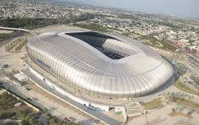
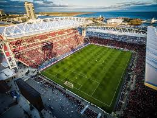

Estadio Azteca
Ciudad de Mexíco,Mexíco
Rose Bowl
Los angeles,Estados Unidos
Estadio Olimpico de Montreal
Montreal,Canadá

Estadio MetLife
Nueva Jersey,Estados Unidos

Estadio BBVA
Monterrey,Mexíco

Estadio BMO Field
Toronto,Canadá